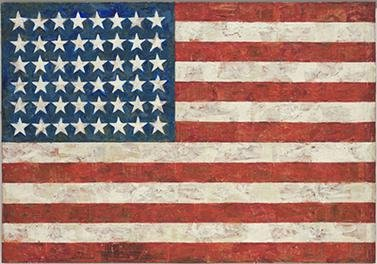

Flag
Jasper Johns · 1954–55 · Encaustic, oil and collage on fabric mounted on plywood · 107.3 × 153.8 cm · Museum of Modern Art, New York
In copyright. Look and learn: shown for study, not for download.
Johns was 24 when he made this painting, two years after his discharge from the U.S. Army. He said it was inspired by a dream of the U.S. flag in 1954. It is built from encaustic, oil paint and newsprint collage on three separate canvases mounted on a plywood board, and the newsprint shows under the stripes. He avoided headlines and political news, using inconsequential articles and adverts. He went on to make over 40 works based on the flag.